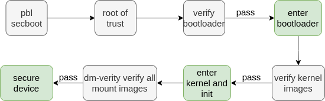
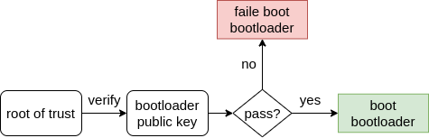
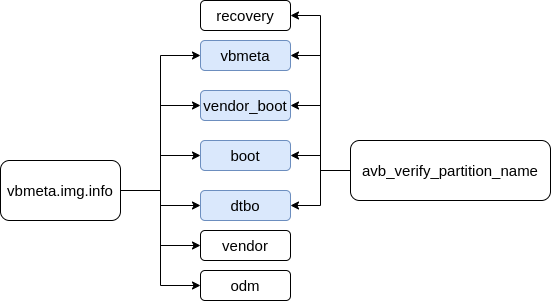
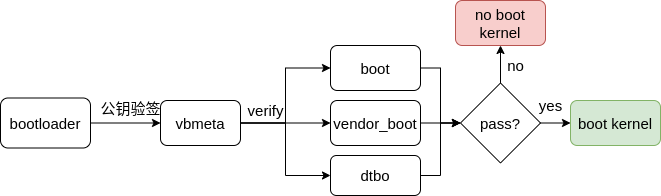
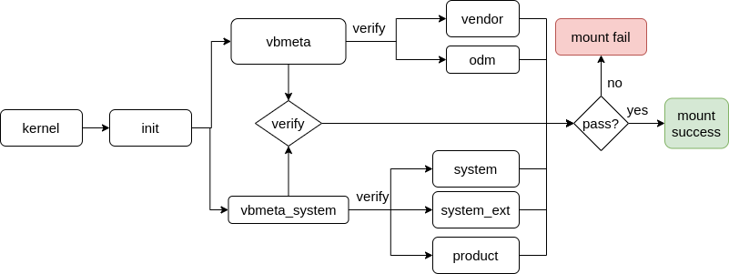
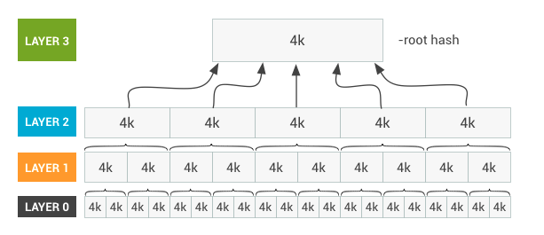

Android Verified Boot 2.0流程 Android Verified Boot(AVB)的作用是校验各个镜像，确保各个镜像没有被篡改过的。如果镜像被篡改过，设备将会报启动异常。
概览：
设备上电最早启动pbl(primary bootloader)，进行secboot(secure boot)工作，secboot主要工作是校验bootloader的合法性，校验没问题才启动bootloader。
bootloader 需要校验下一启动阶段需要用到的镜像，如boot.img, dtbo.img 等镜像，这里就开始Android Verified Boot(AVB)，校验没问题才启动到kernel。
到kernel 和 init 阶段则开始新一轮校验，如system.img vendor.img 等镜像，校验过了之后才对分区进行挂载。
说白了，每一个启动阶段，用到什么就校验什么。确保分区读出来的内容，都是没有被篡改过。

Secboot boot secboot: bootloader 可信的根本。
secboot的工作原理：每一个SoC只能写一次根证书，叫root of trust。
可以简单理解 root of trust 的用途是校验bootloader是否被篡改。
secure boot 校验流程可以总结下图。

Bootloader AVB(Android Verified Boot 2.0) bootloader需要校验什么？ 在bootloader中，需要校验分区的变量：
1 2 3 4 5 6 7 8 9 static CHAR8 *avb_verify_partition_name[] = { "boot" , "dtbo" , "vbmeta" , "recovery" , "vendor_boot" };
从上面的变量可以知道，在bootloader中，可能需要校验上面的5个镜像。
为什么说是可能？因为最终的校验是需要和vbmeta镜像来决定的。
通过avbtool工具，解析vbmeta镜像：
1 avbtool info_image --image vbmeta.img > vbmeta.img.info
vbmeta.img.info 内容
1 2 3 4 5 6 7 8 9 10 11 12 13 14 15 16 17 18 19 20 21 22 23 24 25 26 27 28 29 30 31 32 33 34 35 36 37 38 39 40 41 42 43 44 45 Minimum libavb version: 1.0 Header Block: 256 bytes Authentication Block: 576 bytes Auxiliary Block: 4032 bytes Public key (sha1): 2e22ae4a46cf9db9c24ab74cee91fa005ccb30e4 Algorithm: SHA256_RSA4096 Rollback Index: 0 Flags: 0 Release String: 'avbtool 1.1.0' Descriptors: Chain Partition descriptor: Partition Name: vbmeta_system Rollback Index Location: 2 Public key (sha1): fc92d9cba0628858d846fb9a18a7af72b05d7dc8 ... Hash descriptor: ... Partition Name: boot Salt: e691366c1c43ee5e23b342d65555ad8cfbadf77118dceb77e240c8e7d3e63ea6 Digest: 239648eb41f5a491c7c4d6b51b52a533bd9da98ba8800f58a0957f7341dd1686 Flags: 0 Hash descriptor: ... Partition Name: dtbo Salt: d445a36d8154a774589dd51c49029ee388ecaac28212c8c6899f45dc5a51dbcf Digest: cac0bd59091464292bc83d6f1193afb1520c12a3849f2673ad3160bb951acf6d Flags: 0 Hash descriptor: ... Partition Name: vendor_boot Salt: 5f7b7c3592142d4f3645d7e675fb7865915e52e8b361ba330fccf00aeb1c4028 Digest: cf153ab9df9a5c34024417ea2b0b4dfd716d01ba9cd2d5bcf964fe7e25cdd802 Flags: 0 Hashtree descriptor: ... Partition Name: odm Salt: b6e1f57ae6939659355e83ad7fa57feb6b5eb15a3d16b96752f43cdc14918708 Root Digest: da99875b16661e72eec81d05d58dffdf09fe228d Flags: 0 Hashtree descriptor: ... Partition Name: vendor Salt: b6e1f57ae6939659355e83ad7fa57feb6b5eb15a3d16b96752f43cdc14918708 Root Digest: 336bd4885da274ae0de38b32b899f7b6169e676f Flags: 0
通过vbmeta.img.info以及avb_verify_partition_name数组组成集合知道
bootloader中需要校验 vbmeta、boot 、dtbo、vendor_boot四个镜像，这4个镜像也是下一个启动阶段需要用到的。
如下图，蓝色代表bootloader需要校验的镜像。

UEFI(bootloader) AVB2.0代码校验流程 简单的校验流程图：

核心函数load_and_verify_vbmeta校验vbmeta，确保vbmeta是可信的。如何做到可信？
1 2 3 4 5 6 7 8 9 10 11 12 13 14 15 16 17 18 19 20 21 22 23 24 25 26 27 28 29 30 31 32 33 34 35 36 37 38 39 40 41 42 43 44 45 46 47 48 49 50 51 52 53 54 55 static AvbSlotVerifyResult load_and_verify_vbmeta (...) ... vbmeta_ret = avb_vbmeta_image_verify(vbmeta_buf, vbmeta_num_read, &pk_data, &pk_len); ... io_ret = ops->validate_vbmeta_public_key(ops, pk_data, pk_len, pk_metadata, pk_metadata_len, &key_is_trusted); ... descriptors = avb_descriptor_get_all(vbmeta_buf, vbmeta_num_read, &num_descriptors); ... for (n = 0 ; n < num_descriptors; n++) { ... if (!avb_descriptor_validate_and_byteswap(descriptors[n], &desc)) { avb_errorv(full_partition_name, ": Descriptor is invalid.\n" , NULL ); ret = AVB_SLOT_VERIFY_RESULT_ERROR_INVALID_METADATA; goto out; } ... switch (desc.tag) { case AVB_DESCRIPTOR_TAG_HASH: { AvbSlotVerifyResult sub_ret; sub_ret = load_and_verify_hash_partition(ops, requested_partitions, ab_suffix, allow_verification_error, descriptors[n], slot_data); if (sub_ret != AVB_SLOT_VERIFY_RESULT_OK) { ret = sub_ret; if (!allow_verification_error || !result_should_continue(ret)) { goto out; } } } break ; } ... }
以boot镜像为例，对load_and_verify_hash_partition函数说明
1、获取vbmeta中需要检验boot镜像的信息（salt 和 digest），命名为salt1和 digest1
1 2 3 4 5 6 7 8 9 10 if (!avb_hash_descriptor_validate_and_byteswap( (const AvbHashDescriptor*)descriptor, &hash_desc)) { ret = AVB_SLOT_VERIFY_RESULT_ERROR_INVALID_METADATA; goto out; } desc_partition_name = ((const uint8_t *)descriptor) + sizeof (AvbHashDescriptor); desc_salt = desc_partition_name + hash_desc.partition_name_len; desc_digest = desc_salt + hash_desc.salt_len;
2、获取boot分区的image_buf
1 2 io_ret = ops->read_from_partition( ops, part_name, 0 , image_size, image_buf, &part_num_read);
3、通过分区image_buf 和salt1计算出boot分区的 digest2
1 2 3 4 avb_sha256_init(&sha256_ctx); avb_sha256_update(&sha256_ctx, desc_salt, hash_desc.salt_len); avb_sha256_update(&sha256_ctx, image_buf, hash_desc.image_size); digest = avb_sha256_final(&sha256_ctx);
4、最后对比 digest1和 digest2的值是否相同
1 2 3 4 5 6 7 8 9 10 11 if (avb_safe_memcmp(digest, desc_digest, digest_len) != 0 ) { avb_errorv(part_name, ": Hash of data does not match digest in descriptor.\n" , NULL ); ret = AVB_SLOT_VERIFY_RESULT_ERROR_VERIFICATION; goto out; } else { avb_debugv (part_name, ": success: Image verification completed\n" , NULL ); } ret = AVB_SLOT_VERIFY_RESULT_OK;
从第3和4点看出，如果你篡改一下boot.img的一个比特位，都导致boot.img计算出来的digest值不对。
而如果要篡改vbmeta.img，这个也不可能，因为vbmeta.img在编译时，根据私钥与各个校验镜像（boot.img, dto.img …）计算hash才生成的vbmeta.img。
kernel/init AVB 2.0 init阶段的avb校验，可以通过dts和fstab确定需要校验的镜像。
1 2 3 4 5 6 7 8 9 10 11 12 13 14 15 16 17 18 19 android { compatible = "android,firmware" ; vbmeta { compatible = "android,vbmeta" ; parts = "vbmeta,boot,system,vendor,dtbo" ; }; fstab { compatible = "android,fstab" ; vendor { compatible = "android,vendor" ; dev = "/dev/block/platform/soc/1d84000.ufshc/by-name/vendor" ; type = "ext4" ; mnt_flags = "ro,barrier=1,discard" ; fsmgr_flags = "wait,slotselect,avb" ; status = "ok" ; }; }; };
dts中的 compatible = "android,fstab";目的是告诉init进程，vendor分区需要早点挂载。
其中 fsmgr_flags = "... avb" 告诉init进程，vendor分区需要avb校验。
但在888高通平台上采用动态分区的策略，无法找到vendor实体分区镜像，估计这一步是没有生效的。
我们只需要关注fstab中的avb=挂载参数。
1 2 3 4 5 system /system ext4 ro,barrier=1,discard wait,slotselect,avb=vbmeta_system,logical,first_stage_mount,avb_keys=/avb/q-gsi.avbpubkey:/avb/r-gsi.avbpubkey:/avb/s-gsi.avbpubkey system_ext /system_ext ext4 ro,barrier=1,discard wait,slotselect,avb=vbmeta_system,logical,first_stage_mount product /product ext4 ro,barrier=1,discard wait,slotselect,avb=vbmeta_system,logical,first_stage_mount vendor /vendor ext4 ro,barrier=1,discard wait,slotselect,avb,logical,first_stage_mount odm /odm ext4 ro,barrier=1,discard wait,slotselect,avb,logical,first_stage_mount
其中 avb=vbmeta_system涉及的system、system_ext、product三个镜像需要跟vbmeta_system镜像进行校验。
而avb没有vbmeta_system参数的，则跟vbmeta镜像进行校验，可以参考上面解析的vbmeta.img.info。
解析vbmeta_system镜像以求证avb=vbmeta_system涉及的三个分区:
1 avbtool info_image --image vbmeta_system.img > vbmeta_system.img.info
vbmeta_system.img.info内容
1 2 3 4 5 6 7 8 9 10 11 12 13 14 15 16 17 18 19 20 21 22 23 24 25 26 27 28 29 Minimum libavb version: 1.0 Header Block: 256 bytes Authentication Block: 320 bytes Auxiliary Block: 2368 bytes Public key (sha1) : fc92d9cba0628858d846fb9a18a7af72b05d7dc8 Algorithm: SHA256_RSA2048 Rollback Index: 1598918400 Flags: 0 Release String: 'avbtool 1.1.0' Descriptors: ... Hashtree descriptor: ... Partition Name: product Salt: b6e1f57ae6939659355e83ad7fa57feb6b5eb15a3d16b96752f43cdc14918708 Root Digest: 8747 dcab121c9cf740b106dc4b5545d685ee148f Flags: 0 Hashtree descriptor: ... Partition Name: system Salt: b6e1f57ae6939659355e83ad7fa57feb6b5eb15a3d16b96752f43cdc14918708 Root Digest: 489 a406f49dd15c6c4ab3f86ae8c490837602f81 Flags: 0 Hashtree descriptor: ... Partition Name: system_ext Salt: b6e1f57ae6939659355e83ad7fa57feb6b5eb15a3d16b96752f43cdc14918708 Root Digest: 3 eabb06d98d7e4639fbca3fd21806ef36332f1d3 Flags: 0
可以看到vbmeta_system.img.info中包含product system system_ext三个镜像校验信息。
前面提到，高通888平台采用动态分区，没有vendor，system等镜像的实体分区，fstab该如何挂载这些镜像呢？
答案是通过logical挂载参数，告诉init进程，该分区是逻辑分区（虚拟分区），从super这一实体分区中划分出来。
1 vbmeta_system.img vbmeta.img vendor.img product.img odm.img system_ext.img system.img

如果校验失败，日志会报dm-verity device corrupted重启进入fastboot模式。
校验失败还要继续启动，则需要disable-verity关闭init阶段AVB。
关闭init阶段AVB 1 2 3 fastboot --disable -verification flash vbmeta vbmeta.img fastboot --disable -verity flash vbmeta vbmeta.img adb disable -verity
以上三个命令，本质上都是修改vbmeta对应的一个数据位，对应标志位说明：
1 2 3 4 5 6 7 8 9 10 11 12 typedef enum { AVB_VBMETA_IMAGE_FLAGS_HASHTREE_DISABLED = (1 << 0 ), AVB_VBMETA_IMAGE_FLAGS_VERIFICATION_DISABLED = (1 << 1 ) } AvbVBMetaImageFlags;
disable-verification和disable-verity看着有差异，但是在源码上看到有意思的地方。
1 2 3 4 5 6 7 8 9 10 11 AvbHashtreeResult AvbHandle::SetUpAvbHashtree (FstabEntry* fstab_entry, bool wait_for_verity_dev) { ... if (status_ == AvbHandleStatus::kHashtreeDisabled || status_ == AvbHandleStatus::kVerificationDisabled) { LINFO << "AVB HASHTREE disabled on: " << fstab_entry->mount_point; return AvbHashtreeResult::kDisabled; } ... }
1 2 3 4 5 6 7 8 9 10 11 12 13 14 15 16 17 18 19 bool FirstStageMountVBootV2::SetUpDmVerity (FstabEntry* fstab_entry) ... if (avb_handle_->status() == AvbHandleStatus::kHashtreeDisabled || avb_handle_->status() == AvbHandleStatus::kVerificationDisabled) { LOG(ERROR) << "Top-level vbmeta is disabled, skip Hashtree setup for << fstab_entry->mount_point; return true; // Returns true to mount the partition directly. } else { ... } ... switch (hashtree_result) { case AvbHashtreeResult::kDisabled: // 与SetUpAvbHashtree函数的返回值是一样的 return true; // Returns true to mount the partition. ... } }
因此，从这里看，无论是disable-verification还是disable-verity最终都是殊途同归。
浅谈device-mapper-verity(dm-verity) 启动到init之后，system vendor 之类的镜像都是几个G的文件大小。如果真要整个镜像进行hash校验，对启动速度将会有极大的影响。
因此，才有了dm-verity这一策略。遵守上面介绍的，用到什么就校验什么的思路，来简单说一下dm-verity的工作原理。

图片来源：https://source.android.com/security/verifiedboot/dm-verity
在编译阶段，首先会对系统镜像（比如system.img、vendor.img）按照每4k大小计算对应hash，将这些hash信息存起来，形成上面图中的layer 0层，紧接着会对 layer 0 层同样按照每4k大小计算hash，并将这层的hash信息存起来，形成layer 1层，以此类推，直至最后的hash信息存放在一个4k大小的块中(未填满使用0填充)，这里边存储的hash信息称为 root hash。
在运行阶段，对于镜像里的文件进行访问时，操作对应所在块设备的存储区域时，会计算当前存储块(按4k大小)的hash值，然后会跟存储在哈希树上对应块的hash值进行比较，如果匹配不上，则认为当前该文件在底层存储被篡改或是损坏了。
参考资料
This is copyright.